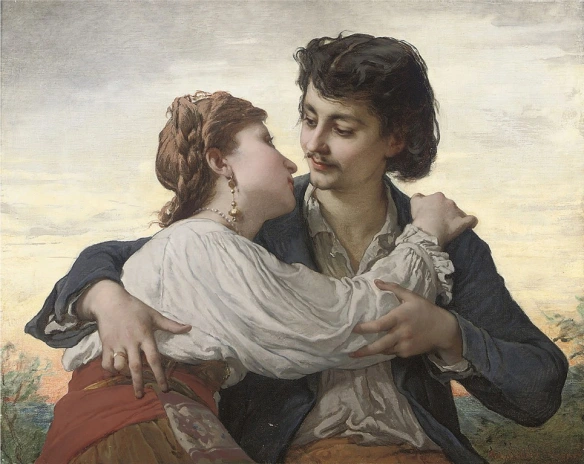

"Passei ontem a noite junto dela"

Passei ontem a noite junto dela.
Do camarote a divisão se erguia
Apenas entre nós — e eu vivia
No doce alento dessa virgem bela...
Tanto amor, tanto fogo se revela
Naqueles olhos negros! Só a via!
Música mais do céu, mais harmonia
Aspirando nessa alma de donzela!
Como era doce aquele seio arfando!
Nos lábios que sorriso feiticeiro!
Daquelas horas lembro-me chorando!
Mas o que é triste e dói ao mundo inteiro
É sentir todo o seio palpitando...
Cheio de amores! E dormir solteiro!